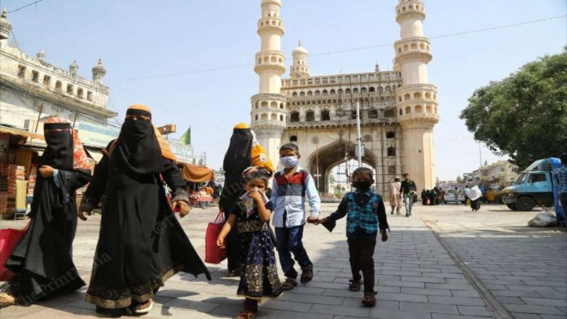

Image 1: Hyderabad
Date: 21 July, 2020
Hyderabad: Butchers set to be tested for Covid-19 ahead of Eid in Hyderabad
New Delhi: Butchers in Hyderabad will have to undergo the Covid-19 test prior to Bakri Eid, which will be marked towards the end of this month. The move comes amid plans to have a larger awareness drive among the most vulnerable sections of society in Telangana.
Read More